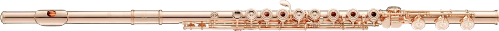
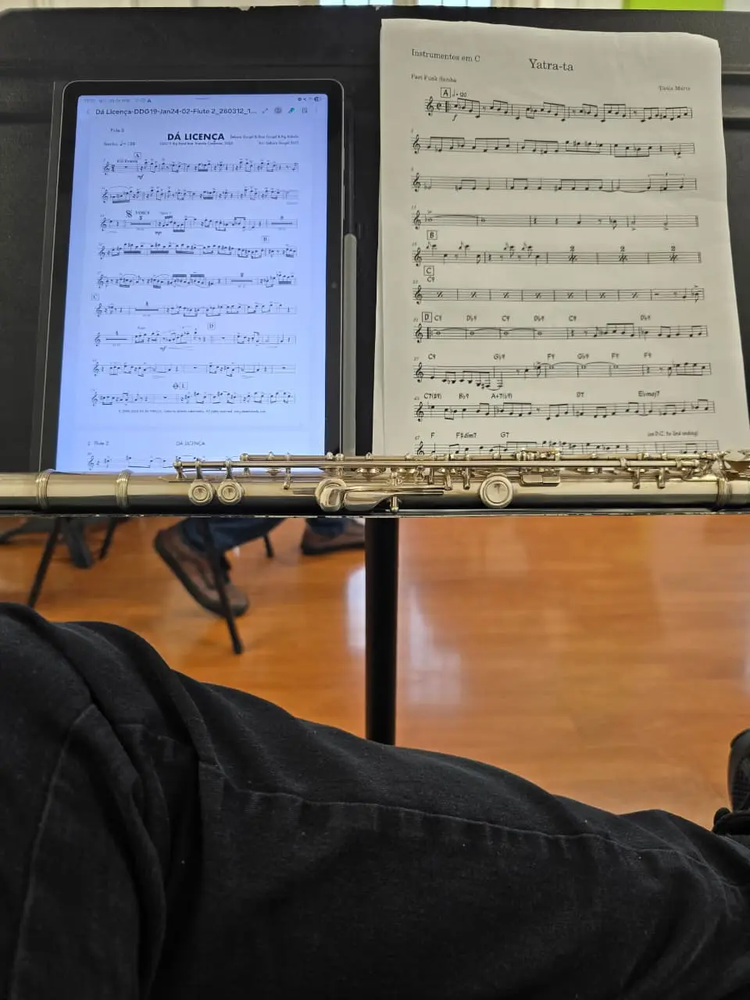
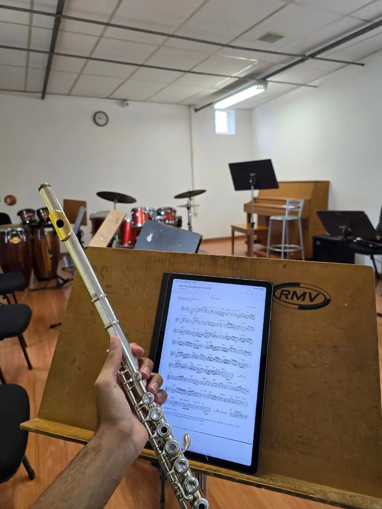
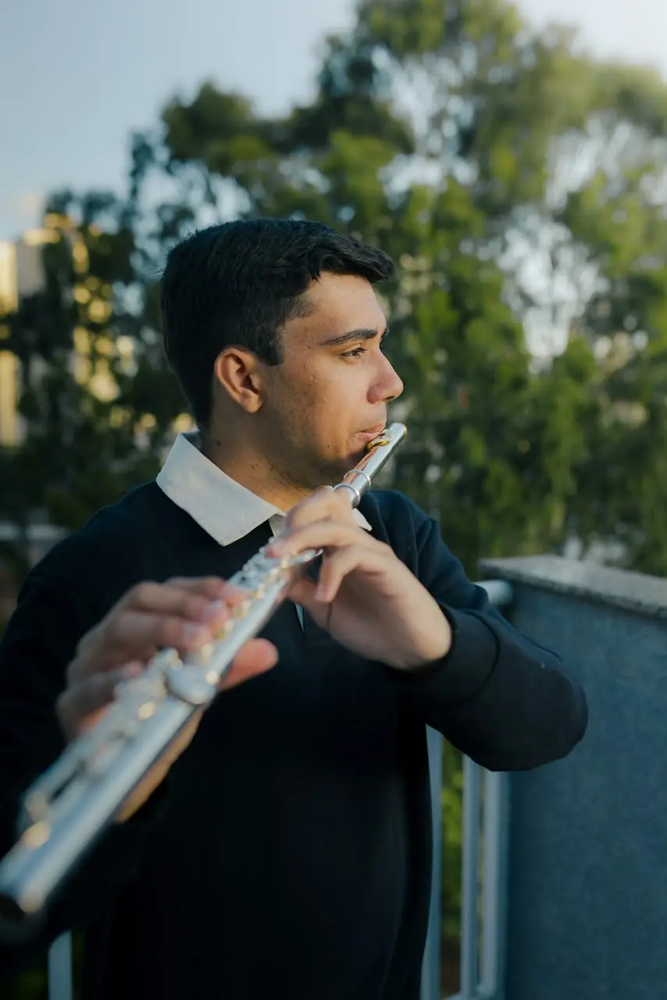
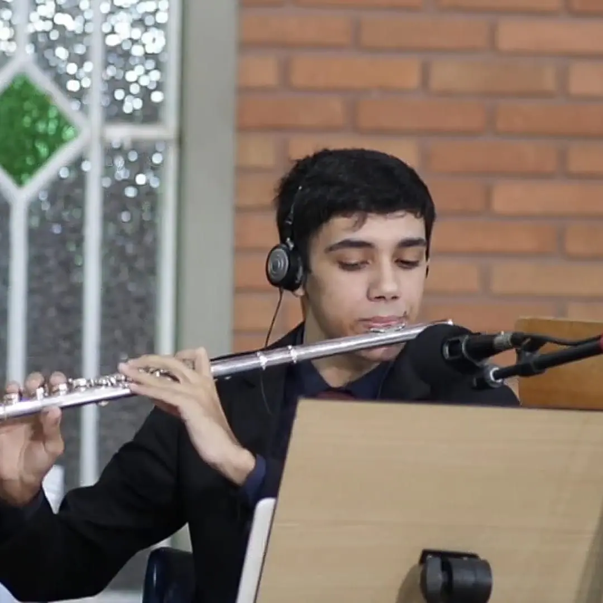
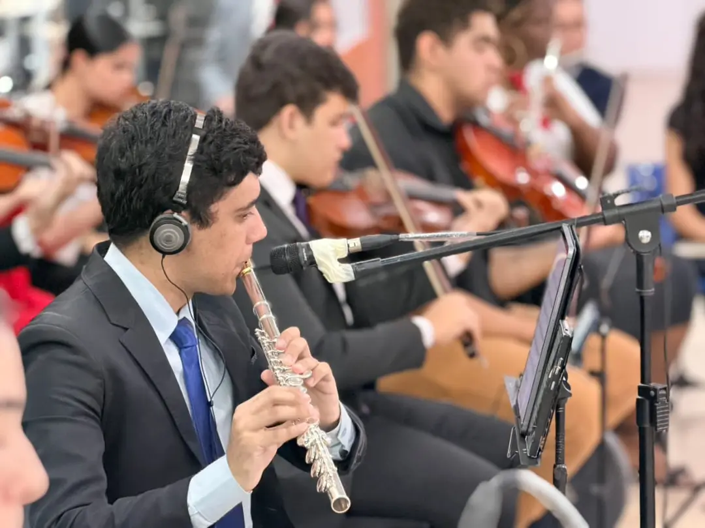
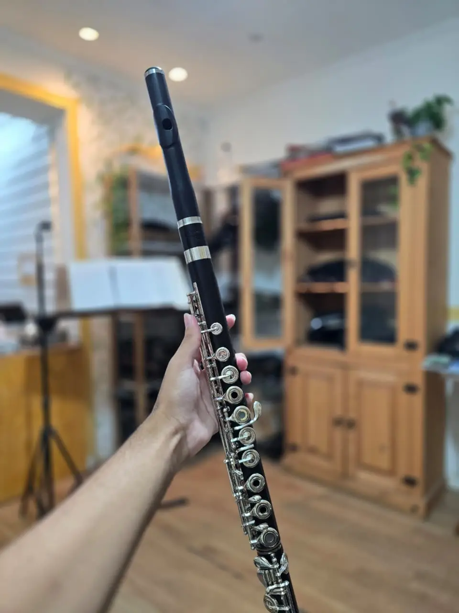
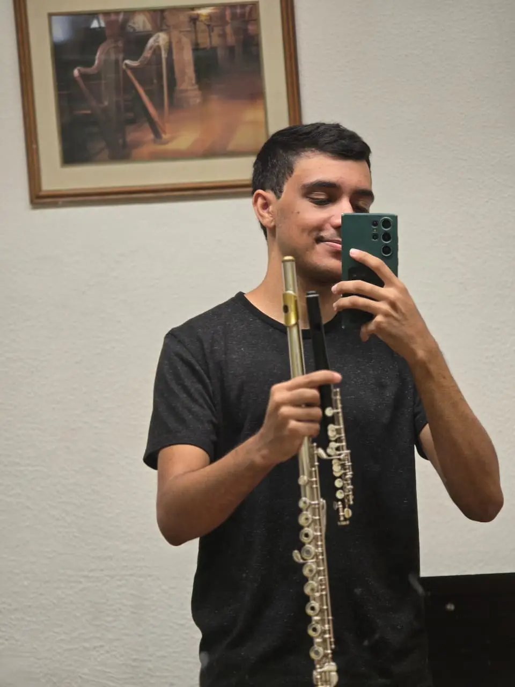
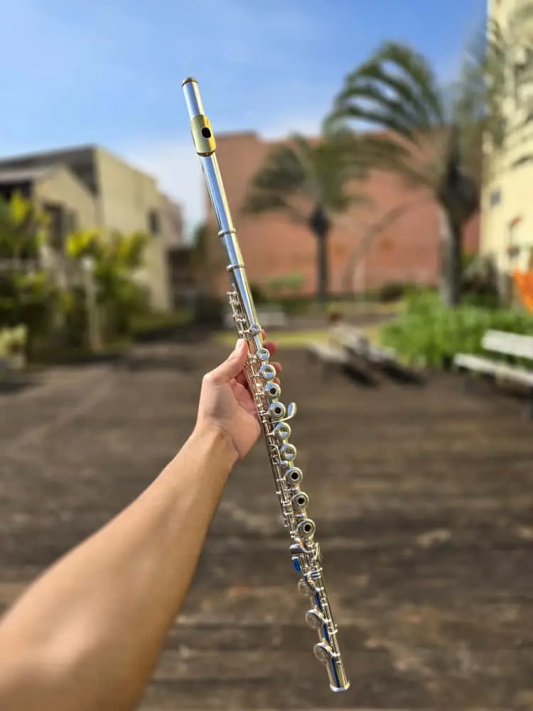
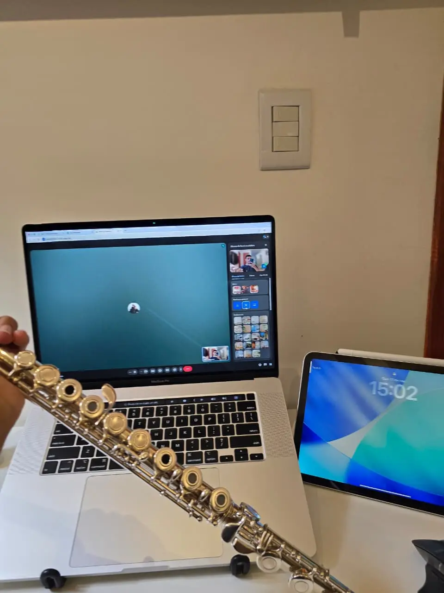

Uma jornada pela arte de aprender, estudar e tocar flauta transversal.
por Natan Schneider
Todo flautista começa em algum lugar.
Antes das grandes obras, existem os primeiros sons.
Antes da velocidade, existe o controle.
Antes da interpretação, existe a técnica.
E antes de tudo isso, existe o desejo de aprender.
O mapa da jornada
Um caminho. Não uma corrida.
Dezessete etapas, do primeiro contato à formação artística. Cada flautista percorre o caminho no seu ritmo — este é um mapa de desenvolvimento, não uma competição.
Toque em uma etapa para abrir. As etapas se desbloqueiam com as provas — e as avançadas, nas aulas com Natan.
As etapas da jornada
Um passo de cada vez.
Cada etapa traz o essencial, com imagens e exemplos. Ao final, uma prova rápida desbloqueia a próxima.
01
Primeiros passos
Início da jornada
Todo flautista começa em algum lugar.
Você está aqui

Porta-lábioCoroaCorpo e chavesPé
CabeçaCorpoPé
O ar se divide na borda: parte entra, parte sai — e a coluna de ar vibra.
Conhecendo a flauta
O som nasce do ar soprado contra a borda do orifício — sem palheta, sem vibração dos lábios.
Saiba mais
A flauta transversal é um instrumento de sopro da família das madeiras — mesmo sendo, hoje, geralmente de metal. O som nasce quando o ar soprado pela embocadura encontra a borda do orifício da cabeça e começa a oscilar.
Como praticarObserve a flauta antes de tocar: o tubo, as chaves, as sapatilhas. Entenda que é um mecanismo de precisão.
Partes do instrumento
Cabeça, corpo e pé: três partes, um único instrumento.
Saiba mais
Três partes: a cabeça (com o porta-lábio e o orifício de embocadura), o corpo (com a maior parte das chaves) e o pé (com as chaves das notas mais graves, até Dó ou Si).
Como praticarAprenda os nomes: cabeça, porta-lábio, corpo, pé, chaves, sapatilhas, mecanismo. Isso facilita qualquer conversa com professores e técnicos.
02
Primeiros passos
Primeiro contato
Conhecer o instrumento antes de tocá-lo.
Bloqueada
Crie sua conta gratuita para começar a jornada.
Faça a prova de nivelamento e desbloqueie as etapas no seu ritmo.
03
Primeiros passos
Primeiro som
Antes das grandes obras, existem os primeiros sons.
Bloqueada
Crie sua conta gratuita para começar a jornada.
Faça a prova de nivelamento e desbloqueie as etapas no seu ritmo.
04
Fundamentos
Fundamentos
Não existe evolução verdadeira sem fundamento.
Bloqueada
Crie sua conta gratuita para começar a jornada.
Faça a prova de nivelamento e desbloqueie as etapas no seu ritmo.
05
Fundamentos
Construção do som
Você já aprendeu a produzir o som. Agora precisa aprender a controlá-lo.
Bloqueada
Crie sua conta gratuita para começar a jornada.
Faça a prova de nivelamento e desbloqueie as etapas no seu ritmo.
06
Fundamentos
Respiração
O ar é a matéria-prima do som.
Bloqueada
Crie sua conta gratuita para começar a jornada.
Faça a prova de nivelamento e desbloqueie as etapas no seu ritmo.
07
Fundamentos
Articulação
A língua dá forma ao som — como as consoantes dão forma às palavras.
Bloqueada
Crie sua conta gratuita para começar a jornada.
Faça a prova de nivelamento e desbloqueie as etapas no seu ritmo.
08
Fundamentos
Afinação
Afinar é ouvir — antes de olhar para o afinador.
Bloqueada
Crie sua conta gratuita para começar a jornada.
Faça a prova de nivelamento e desbloqueie as etapas no seu ritmo.
09
Desenvolvimento
Técnica
Velocidade não é o objetivo. Controle é o caminho.
Bloqueada
Crie sua conta gratuita para começar a jornada.
Faça a prova de nivelamento e desbloqueie as etapas no seu ritmo.
10
Desenvolvimento
Escalas
Uma escala pode parecer simples. Para um flautista, ela pode ser uma das maiores ferramentas de desenvolvimento.
Bloqueada
Crie sua conta gratuita para começar a jornada.
Faça a prova de nivelamento e desbloqueie as etapas no seu ritmo.
11
Desenvolvimento
Estudos
Um bom estudo é técnica disfarçada de música.
Bloqueada
Crie sua conta gratuita para começar a jornada.
Faça a prova de nivelamento e desbloqueie as etapas no seu ritmo.
12
Intermediário
Repertório
Seus dedos já conhecem as notas. Agora é hora de fazer música com elas.
Bloqueada
Crie sua conta gratuita para começar a jornada.
Faça a prova de nivelamento e desbloqueie as etapas no seu ritmo.
13
Intermediário
Interpretação
Técnica é uma ferramenta para a música.
Bloqueada
Crie sua conta gratuita para começar a jornada.
Faça a prova de nivelamento e desbloqueie as etapas no seu ritmo.
14
Intermediário
Intermediário
O momento de unir som, técnica e escolhas musicais.
Bloqueada
Crie sua conta gratuita para começar a jornada.
Faça a prova de nivelamento e desbloqueie as etapas no seu ritmo.
15
Avançado
Avançado
Liberdade técnica a serviço de uma ideia.
Bloqueada
Crie sua conta gratuita para começar a jornada.
Faça a prova de nivelamento e desbloqueie as etapas no seu ritmo.
16
Performance
Performance
Tocar para alguém é outra forma de estudar.
Bloqueada
Crie sua conta gratuita para começar a jornada.
Faça a prova de nivelamento e desbloqueie as etapas no seu ritmo.
17
Formação artística
Formação artística
O objetivo é desenvolver liberdade para fazer música.
Bloqueada
Crie sua conta gratuita para começar a jornada.
Faça a prova de nivelamento e desbloqueie as etapas no seu ritmo.
Paradas históricas
Quem percorreu o caminho antes de você.
Inventores, pedagogos e intérpretes que construíram a tradição da flauta. Toque em um nome para conhecer a história e a obra.
JJJohann Joachim Quantz1697 — 1773 · AlemãoO flautista que escreveu um dos grandes tratados do século XVIII.
Intérprete
Compositor
Autor de tratado
Inventor / construtor
Flautista, compositor e construtor de flautas, Quantz serviu por décadas na corte de Frederico II da Prússia, de quem foi professor de flauta. Em 1752 publicou em Berlim o "Versuch einer Anweisung die Flöte traversiere zu spielen" ("Ensaio de um método para tocar a flauta transversal").
O tratado vai muito além da flauta: discute estilo, ornamentação, cadências, acompanhamento e o gosto musical da época. Hoje é uma das fontes mais consultadas sobre a prática da música barroca.
A obra
Versuch einer Anweisung die Flöte traversiere zu spielen (1752)
Objetivo
Orientar o flautista — e o músico em geral — sobre técnica, estilo e interpretação no século XVIII.
Como usar
Leia como um documento histórico, por capítulos, sempre ligando o texto a uma obra que você esteja tocando (uma sonata de Händel, Telemann, Bach ou do próprio Quantz). Há traduções em várias línguas, incluindo a edição inglesa "On Playing the Flute".
Para quem
Intermediário a avançado; essencial para quem se interessa por repertório barroco e práticas historicamente informadas.
Erros comuns
Tratar o texto como regra absoluta para todo repertório, ou ler sem tocar. O tratado descreve o gosto de uma época e de um lugar específicos.
Na sua jornada: Aparece quando você começa a perguntar "como esta música era tocada?". É a ponte entre técnica e estilo.
Nota histórica. Quantz é frequentemente citado como responsável pela adição de uma segunda chave à flauta barroca (distinguindo Ré♯ e Mi♭); a atribuição aparece em fontes históricas, mas detalhes variam entre autores.
Fontes e referências
QUANTZ, Johann Joachim. Versuch einer Anweisung die Flöte traversiere zu spielen. Berlim, 1752. Trad. Edward R. Reilly: On Playing the Flute. 2. ed. Londres: Faber, 1985.
POWELL, Ardal. The Flute. New Haven: Yale University Press, 2002 (Yale Musical Instrument Series).
Grove Music Online. Oxford University Press — verbetes biográficos e "Flute". www.oxfordmusiconline.com
TBTheobald Boehm1794 — 1881 · Alemão (Munique)O inventor da flauta que tocamos hoje.
Inventor / construtor
Intérprete
Compositor
Autor de método
Ourives de formação, flautista da orquestra da corte de Munique e compositor, Boehm dedicou décadas a repensar a acústica e a mecânica da flauta. Em 1832 apresentou uma flauta cônica com novo sistema de chaves em anel; em 1847, a flauta de tubo cilíndrico, com cabeça de perfil parabólico e orifícios grandes — a base do instrumento moderno.
Boehm colocou os orifícios onde a acústica pedia — e não onde os dedos alcançavam — e criou um mecanismo para fechá-los. O resultado foi um instrumento mais homogêneo, mais afinado e mais potente.
A obra
Die Flöte und das Flötenspiel (1871) · 24 Caprices-Études op. 26
Objetivo
Explicar os princípios acústicos e mecânicos de sua flauta e orientar o estudo do instrumento; os Caprichos desenvolvem técnica e musicalidade em todas as tonalidades.
Como usar
O livro (traduzido para o inglês como "The Flute and Flute-Playing") pode ser lido por capítulos, especialmente os trechos sobre som e prática. Os Caprichos op. 26 são estudos avançados: trabalhe um por vez, devagar, com atenção ao som em todas as tonalidades.
Para quem
Livro: qualquer nível curioso sobre o instrumento. Caprichos: avançado.
Erros comuns
Ignorar a história do próprio instrumento; nos estudos, buscar velocidade antes do controle e do som.
Na sua jornada: Quando você monta sua flauta pela primeira vez, está segurando o trabalho de Boehm.
Nota histórica. É frequentemente relatado que Boehm foi influenciado por ouvir o flautista inglês Charles Nicholson, de som poderoso e orifícios grandes, em Londres (1831). O episódio é amplamente citado, mas o peso exato dessa influência é discutido por historiadores.
Fontes e referências
BOEHM, Theobald. Die Flöte und das Flötenspiel. Munique, 1871. Trad. Dayton C. Miller: The Flute and Flute-Playing in Acoustical, Technical, and Artistic Aspects (1908; reed. Dover).
POWELL, Ardal. The Flute. New Haven: Yale University Press, 2002 (Yale Musical Instrument Series).
TOFF, Nancy. The Flute Book: A Complete Guide for Students and Performers. 3. ed. Oxford: Oxford University Press, 2012.
Dayton C. Miller Flute Collection — Library of Congress (acervo digital de instrumentos, documentos e iconografia). www.loc.gov
HAHenri Altès1826 — 1895 · FrancêsUm método completo da tradição do Conservatório de Paris.
Pedagogo
Intérprete
Autor de método
Joseph-Henri Altès foi flautista da Ópera de Paris e professor de flauta no Conservatório de Paris, cargo em que foi sucedido por Paul Taffanel.
Seu método reúne explicações, exercícios e estudos progressivos dentro da tradição francesa do século XIX.
A obra
Méthode de flûte (Méthode complète)
Objetivo
Conduzir o estudante desde os fundamentos até um nível técnico sólido, com exercícios progressivos e duos.
Como usar
Use como espinha dorsal de leitura e mecanismo em uma fase inicial e fundamental, combinando com exercícios de som. Os duos são ótimos para tocar com o professor.
Para quem
Iniciante avançado a intermediário.
Erros comuns
Avançar páginas sem dominar as anteriores; tocar os exercícios sem atenção ao som.
Na sua jornada: Uma ponte entre os primeiros passos e os fundamentos.
Nota histórica. Datas e detalhes de edição variam entre editoras; há versões revisadas e traduzidas do método.
Fontes e referências
BLAKEMAN, Edward. Taffanel: Genius of the Flute. Oxford: Oxford University Press, 2005.
TOFF, Nancy. The Flute Book: A Complete Guide for Students and Performers. 3. ed. Oxford: Oxford University Press, 2012.
PTPaul Taffanel1844 — 1908 · FrancêsConsiderado o fundador da escola francesa moderna de flauta.
Pedagogo
Intérprete
Autor de método
Flautista, regente e professor, Taffanel foi solista da Ópera de Paris e da Société des Concerts du Conservatoire, e mais tarde regente de ambas. Em 1879 fundou a Société des instruments à vent, dedicada à música de câmara para sopros. A partir de 1893 foi professor de flauta do Conservatório de Paris.
Taffanel defendeu um som flexível e cantado e renovou o repertório e a pedagogia do instrumento. Dele descende uma linhagem de alunos que espalhou a escola francesa pelo mundo.
A obra
Méthode complète de flûte (com Philippe Gaubert, publicada em 1923)
Objetivo
Sistematizar o mecanismo da flauta. Os "17 Grands exercices journaliers de mécanisme" trabalham escalas, arpejos, intervalos e cromatismos em todas as tonalidades.
Como usar
Escolha um ou dois exercícios por período (ex.: nº 1 e nº 4), toque devagar, com metrônomo, variando articulações. O objetivo é regularidade e som homogêneo — a velocidade vem depois.
Para quem
Fundamental (exercícios iniciais, lentos) a profissional. Muitos flautistas usam os exercícios diários a vida toda.
Erros comuns
Tocar o exercício inteiro de uma vez, rápido e sem ouvir. Ou acreditar que mecanismo substitui o trabalho de som.
Na sua jornada: A parada obrigatória de quem entra na técnica: aqui os dedos aprendem a obedecer.
Nota histórica. Taffanel morreu em 1908; o método foi completado e publicado por Philippe Gaubert. A contribuição exata de cada autor em cada parte não é sempre identificável.
Fontes e referências
BLAKEMAN, Edward. Taffanel: Genius of the Flute. Oxford: Oxford University Press, 2005.
PGPhilippe Gaubert1879 — 1941 · FrancêsAluno de Taffanel, completou o método do mestre.
Intérprete
Compositor
Pedagogo
Autor de método
Flautista, regente e compositor, Gaubert foi aluno de Taffanel e tornou-se professor de flauta do Conservatório de Paris. Regeu a Société des Concerts du Conservatoire e a Ópera de Paris. Escreveu obras importantes para flauta, como a Fantaisie, a Nocturne et Allegro scherzando e sonatas.
Gaubert completou o método iniciado por Taffanel e é peça central da escola francesa como intérprete, professor e compositor.
A obra
Méthode complète de flûte (Taffanel & Gaubert)
Objetivo
Ver Taffanel. Além do método, suas obras são repertório formativo para a sonoridade francesa.
Como usar
Estude os exercícios diários junto com uma obra de Gaubert (como a Madrigal ou a Fantaisie) para ligar o mecanismo ao estilo.
Para quem
Intermediário a avançado.
Erros comuns
Separar técnica de música — exatamente o que Gaubert, compositor, não fazia.
Na sua jornada: Mostra que o método e a música vêm da mesma tradição.
Fontes e referências
BLAKEMAN, Edward. Taffanel: Genius of the Flute. Oxford: Oxford University Press, 2005.
JAJoachim Andersen1847 — 1909 · DinamarquêsO autor dos estudos que acompanham o flautista por anos.
Intérprete
Compositor
Autor de método
Flautista e regente dinamarquês, Andersen foi membro fundador da Orquestra Filarmônica de Berlim (1882), como primeiro flautista. Mais tarde voltou a Copenhague, onde atuou como regente.
Andersen escreveu diversas coleções de estudos que formam uma progressão natural, do intermediário ao avançado. São estudos musicais — com harmonia, forma e caráter —, não apenas exercícios.
Desenvolver técnica dentro de um contexto musical: tonalidades, registros, articulações, resistência e fraseado.
Como usar
Uma progressão comum: op. 41 (18 Estudos) e op. 33 → op. 30 e op. 37 → op. 63 e op. 60 → op. 15 (24 Grandes Estudos). Estude por trechos, devagar, com metrônomo, e só depois toque o estudo inteiro como uma peça.
Para quem
Intermediário a profissional (op. 15 e op. 60 são bastante exigentes).
Erros comuns
Tocar sempre do início ao fim "para ver se sai"; ignorar dinâmicas e caráter; avançar para opus mais difíceis cedo demais.
Na sua jornada: Quando os estudos deixam de ser exercícios e passam a ser música.
Nota histórica. A ordem de dificuldade entre os opus é uma sugestão pedagógica comum, não uma regra; professores divergem.
Fontes e referências
TOFF, Nancy. The Flute Book: A Complete Guide for Students and Performers. 3. ed. Oxford: Oxford University Press, 2012.
Grove Music Online. Oxford University Press — verbetes biográficos e "Flute". www.oxfordmusiconline.com
IMSLP — Petrucci Music Library (partituras em domínio público; verificar a situação de direitos autorais no seu país). imslp.org
EKErnesto Köhler1849 — 1907 · Italiano (atuou na Rússia)Estudos progressivos para construir a fluência.
Intérprete
Compositor
Autor de método
Nascido em Módena, Köhler foi flautista e compositor e desenvolveu grande parte de sua carreira em São Petersburgo, como flautista da orquestra dos Teatros Imperiais.
Sua coleção "Progress in Flute Playing" op. 33, em três volumes, é uma das sequências de estudos mais usadas entre o nível fundamental e o intermediário.
A obra
Progress in Flute Playing op. 33 (3 volumes)
Objetivo
Desenvolver gradualmente fluência técnica, leitura e articulação.
Como usar
Volume 1 para o fundamental; volumes 2 e 3 para o intermediário. Defina um andamento-alvo realista e suba o metrônomo aos poucos. Toque cada estudo com uma intenção musical clara.
Para quem
Fundamental a intermediário.
Erros comuns
Tratar como exercício mecânico; tocar rápido com som pobre.
Na sua jornada: Uma das trilhas mais clássicas entre os fundamentos e os grandes estudos.
Fontes e referências
TOFF, Nancy. The Flute Book: A Complete Guide for Students and Performers. 3. ed. Oxford: Oxford University Press, 2012.
IMSLP — Petrucci Music Library (partituras em domínio público; verificar a situação de direitos autorais no seu país). imslp.org
LFLouis Fleury1878 — 1926 · FrancêsO flautista para quem Debussy escreveu Syrinx.
Intérprete
Flautista francês de grande atuação na música de câmara e na divulgação do repertório de sua época. Foi o intérprete para quem Debussy escreveu a peça para flauta solo que hoje conhecemos como "Syrinx" (1913), composta como música de cena para a peça "Psyché", de Gabriel Mourey.
Fleury mostra o papel do intérprete na criação do repertório: muitas obras nasceram da colaboração entre compositores e flautistas.
A obra
Claude Debussy — Syrinx (1913)
Objetivo
Não é um método, e sim uma obra que é parada obrigatória na formação interpretativa: liberdade, cor, silêncio e narrativa em uma única linha melódica.
Como usar
Leia sobre o contexto (o mito de Pã e Siringe), observe cada indicação da partitura e grave versões diferentes. Trabalhe respiração e pausas como parte do discurso.
Para quem
Intermediário a avançado.
Erros comuns
Tocar "livre" sem estrutura; ignorar as indicações precisas de Debussy.
Na sua jornada: O momento em que o flautista descobre que uma única linha pode contar uma história inteira.
Nota histórica. A obra foi publicada postumamente (1927) e o título "Syrinx" foi dado na edição; o título original em fontes da época era "Flûte de Pan". Detalhes do manuscrito e das edições são discutidos em estudos críticos.
Fontes e referências
TOFF, Nancy. The Flute Book: A Complete Guide for Students and Performers. 3. ed. Oxford: Oxford University Press, 2012.
Grove Music Online. Oxford University Press — verbetes biográficos e "Flute". www.oxfordmusiconline.com
MMMarcel Moyse1889 — 1984 · FrancêsUm dos grandes nomes da pedagogia da flauta.
Pedagogo
Intérprete
Autor de método
Nascido em Saint-Amour (Jura), Moyse estudou no Conservatório de Paris na tradição de Taffanel e foi, por décadas, um dos flautistas mais ativos da França — estreou, por exemplo, o Concerto de Jacques Ibert (1934). Foi professor do Conservatório de Paris e, mais tarde, nos Estados Unidos, esteve entre os fundadores do Marlboro Music, em Vermont.
Sua abordagem sobre sonoridade, fraseado e desenvolvimento musical influenciou gerações de flautistas. Moyse tratava o som como algo a ser construído nota a nota, e a música como a razão de todo o trabalho técnico.
A obra
De la sonorité: art et technique (1934)
Objetivo
Desenvolvimento da sonoridade, controle, homogeneidade entre registros e expressão.
Como usar
Comece pelos exercícios de notas ligadas em semitons descendentes a partir do Si médio: uma nota "modelo" bem soada e a próxima imitando sua qualidade. Pouco tempo por dia, com atenção total. Use espelho, afinador ocasionalmente e, sobretudo, a escuta.
Para quem
A partir do fundamental (com orientação) até o nível profissional.
Erros comuns
Estudar mecanicamente, "cumprindo" a página; forçar o som; tocar longo demais sem pausa; esquecer que o objetivo é expressivo.
Na sua jornada: Você já produz som. Moyse ensina a ouvi-lo — e a transformá-lo.
Nota histórica. As fontes divergem quanto aos detalhes de seus estudos no Conservatório (professores e datas); a biografia de referência é a de Ann McCutchan.
Fontes e referências
McCUTCHAN, Ann. Marcel Moyse: Voice of the Flute. Portland: Amadeus Press, 1994.
MOYSE, Marcel. De la sonorité: art et technique. Paris: Alphonse Leduc, 1934.
TOFF, Nancy. The Flute Book: A Complete Guide for Students and Performers. 3. ed. Oxford: Oxford University Press, 2012.
Grove Music Online. Oxford University Press — verbetes biográficos e "Flute". www.oxfordmusiconline.com
JRJean-Pierre Rampal1922 — 2000 · Francês (Marselha)O flautista que levou o instrumento às grandes salas como solista.
Intérprete
Pedagogo
Rampal construiu uma carreira internacional de solista em uma época em que a flauta raramente ocupava esse lugar. Gravou extensamente, ajudou a redescobrir grande parte do repertório barroco e colaborou com compositores de seu tempo. Foi professor do Conservatório de Paris.
Rampal mudou a percepção pública da flauta como instrumento solista e ampliou enormemente o repertório gravado.
A obra
Gravações e edições de repertório
Objetivo
Não é um método: sua contribuição pedagógica está nas gravações e nas edições que ajudaram a difundir o repertório.
Como usar
Ouça gravações de diferentes épocas da carreira de Rampal e compare com outros intérpretes na mesma obra. Ouvir com atenção é parte do estudo.
Para quem
Todos os níveis, como ouvinte.
Erros comuns
Imitar um intérprete em vez de entender suas escolhas.
Na sua jornada: Aparece quando a jornada chega ao palco.
Fontes e referências
RAMPAL, Jean-Pierre; WISE, Deborah. Music, My Love: An Autobiography. Nova York: Random House, 1989.
Grove Music Online. Oxford University Press — verbetes biográficos e "Flute". www.oxfordmusiconline.com
JGSir James GalwayNascido em 1939 · Norte-irlandês (Belfast)Da orquestra ao mundo: a flauta para grandes públicos.
Intérprete
Pedagogo
Autor de método
Galway foi primeiro flautista da Filarmônica de Berlim (1969–1975) antes de seguir carreira solo internacional, transitando entre o repertório clássico e o popular. Escreveu o livro "Flute" (série Yehudi Menuhin Music Guides) e mantém atividade pedagógica.
Mostrou como um flautista clássico pode se comunicar com públicos amplos, sem abrir mão da qualidade sonora.
A obra
Flute (Yehudi Menuhin Music Guides)
Objetivo
Reflexões sobre o instrumento, a técnica e a vida musical a partir da experiência de um grande intérprete.
Como usar
Leia junto com o estudo prático; compare suas ideias com as de outros autores (Moyse, Debost, Wye).
Para quem
Intermediário em diante.
Erros comuns
Tomar a experiência de um intérprete como receita universal.
Na sua jornada: Uma parada no trecho da performance e da formação artística.
Fontes e referências
GALWAY, James. Flute. Londres: Macdonald, 1982 (Yehudi Menuhin Music Guides).
Grove Music Online. Oxford University Press — verbetes biográficos e "Flute". www.oxfordmusiconline.com
MDMichel DebostNascido em 1934 · FrancêsPensar o estudo com clareza, de A a Z.
Intérprete
Pedagogo
Autor de método
Debost foi primeiro flautista da Orquestre de Paris e professor do Conservatório de Paris; depois lecionou no Oberlin Conservatory, nos Estados Unidos. É autor de "The Simple Flute: From A to Z".
Seu livro organiza em verbetes temas como respiração, embocadura, articulação, vibrato, estudo e palco — com uma abordagem prática e direta.
A obra
The Simple Flute: From A to Z (Oxford University Press, 2002)
Objetivo
Responder às grandes questões do estudo da flauta de forma objetiva, por temas.
Como usar
Use como livro de consulta: quando surgir um problema (ex.: vibrato, nervosismo, staccato), leia o verbete e leve uma ideia para o próximo estudo.
Para quem
Intermediário em diante; professores.
Erros comuns
Ler muito e testar pouco.
Na sua jornada: Uma parada no capítulo "Como estudar": aprender a pensar o próprio processo.
Fontes e referências
DEBOST, Michel. The Simple Flute: From A to Z. Nova York: Oxford University Press, 2002.
TOFF, Nancy. The Flute Book: A Complete Guide for Students and Performers. 3. ed. Oxford: Oxford University Press, 2012.
TWTrevor WyeNascido em 1935 · InglêsA organização sistemática do estudo moderno.
Pedagogo
Autor de método
Intérprete
Flautista e professor inglês, Wye estudou, entre outros, com Marcel Moyse e Geoffrey Gilbert. Lecionou no Royal Northern College of Music e fundou uma escola internacional de flauta na Inglaterra. É autor de uma das séries pedagógicas mais difundidas do mundo.
Wye organizou o estudo por áreas — som, técnica, articulação, afinação e vibrato, respiração e escalas — com explicações claras e exercícios progressivos.
Não precisa ser lido em ordem. Identifique a área que precisa de atenção e escolha um exercício por vez para incluir na rotina. Leia as explicações — elas são parte do método.
Para quem
Do fundamental ao profissional (o Vol. 6 é avançado). Para iniciantes, existe "A Beginner's Book for the Flute".
Erros comuns
Tentar fazer todos os exercícios; pular as explicações; estudar sem gravação.
Na sua jornada: O mapa de estudo moderno: ajuda a montar sua rotina de fundamentos.
Nota histórica. Datas biográficas atuais devem ser confirmadas em fonte atualizada.
Fontes e referências
WYE, Trevor. Practice Book for the Flute (vols. 1–6). Londres: Novello.
TOFF, Nancy. The Flute Book: A Complete Guide for Students and Performers. 3. ed. Oxford: Oxford University Press, 2012.
Flautas feitas de ossos de aves e de marfim, encontradas em cavernas do sudoeste da Alemanha (como Hohle Fels e Geißenklösterle), estão entre os instrumentos musicais mais antigos conhecidos.
Renascimento — Barroco
A flauta transversal histórica
A flauta renascentista era um tubo cilíndrico de madeira, sem chaves. No final do século XVII surge a flauta barroca, cônica, em partes, com uma chave. Em 1707, Jacques-Martin Hotteterre publica um dos primeiros métodos dedicados à flauta transversal.
Século XVIII
Quantz e o tratado
Em 1752, Johann Joachim Quantz publica seu "Versuch", tratado que documenta a técnica e o gosto musical da época.
Construtores acrescentam chaves (flautas de 4, 6, 8 chaves) para melhorar as notas cromáticas. O instrumento ganha recursos, mas continua desigual entre as notas.
1832 — 1847
Theobald Boehm
Boehm reinventa a flauta a partir da acústica: primeiro com uma flauta cônica de chaves em anel (1832), depois com a flauta de tubo cilíndrico e cabeça parabólica (1847).
O novo sistema é adotado gradualmente — na França, especialmente a partir de sua adoção no Conservatório de Paris. Em outros países, sistemas antigos convivem com ele por décadas.
Séculos XX e XXI
A flauta moderna
O sistema Boehm se torna padrão. Variações como chaves abertas (modelo "francês"), pé em Si e novas escalas de afinação — como a do construtor inglês Albert Cooper — refinam o instrumento.
Fim do séc. XIX — séc. XX
Escolas de flauta
A escola francesa, ligada a Taffanel e seus alunos, espalha-se pelo mundo — inclusive para os Estados Unidos, por meio de flautistas como Georges Barrère. Outras tradições nacionais desenvolvem suas próprias características.
Repertório de cinco séculos, técnicas estendidas (multifônicos, sons de ar, frullato), música popular, tecnologia de gravação e estudo. Você entra em uma tradição construída durante séculos.
Fontes da jornada histórica
CONARD, Nicholas J.; MALINA, Maria; MÜNZEL, Susanne C. New flutes document the earliest musical tradition in southwestern Germany. Nature, v. 460, p. 737–740, 2009.
HOTTETERRE, Jacques-Martin. Principes de la flûte traversière, ou flûte d’Allemagne. Paris, 1707.
QUANTZ, Johann Joachim. Versuch einer Anweisung die Flöte traversiere zu spielen. Berlim, 1752. Trad. Edward R. Reilly: On Playing the Flute. 2. ed. Londres: Faber, 1985.
POWELL, Ardal. The Flute. New Haven: Yale University Press, 2002 (Yale Musical Instrument Series).
BOEHM, Theobald. Die Flöte und das Flötenspiel. Munique, 1871. Trad. Dayton C. Miller: The Flute and Flute-Playing in Acoustical, Technical, and Artistic Aspects (1908; reed. Dover).
TOFF, Nancy. The Flute Book: A Complete Guide for Students and Performers. 3. ed. Oxford: Oxford University Press, 2012.
BLAKEMAN, Edward. Taffanel: Genius of the Flute. Oxford: Oxford University Press, 2005.
Os pilares do flautista
Oito pilares sustentam todo o caminho.
Som
Respiração
Articulação
Afinação
Técnica
Leitura
Interpretação
Repertório
Som — A identidade do flautista.
A qualidade, a estabilidade e a flexibilidade do som em todos os registros e dinâmicas.
Por que importa
É a primeira coisa que o ouvinte percebe. Tudo o que você toca passa pelo seu som.
Cada método é uma ferramenta. Nenhum é obrigatório.
Nível
Foco
Rubank Publications · A. C. Petersen (Elementary), J. E. Skornicka (Intermediate), H. Voxman & W. Gower (Advanced)Rubank — Elementary, Intermediate e Advanced MethodInicianteFundamentalIntermediárioMétodo geralLeitura
Autor
Rubank Publications · A. C. Petersen (Elementary), J. E. Skornicka (Intermediate), H. Voxman & W. Gower (Advanced)
História
Série norte-americana de métodos para instrumentos de sopro, muito usada em escolas e bandas. Cada volume é escrito por autores diferentes.
O que é
Métodos progressivos com exercícios, escalas, duetos e pequenas peças.
Para que serve
Construir leitura, digitação, ritmo e repertório técnico básico de forma gradual.
Nível
Iniciante → Fundamental → Intermediário
Como estudar
Siga a ordem das lições, mas não avance sem dominar o som e o ritmo de cada página. Combine com exercícios de som (notas longas).
Paul Taffanel & Philippe Gaubert (1923)Méthode complète de flûte · 17 Grands exercices journaliers de mécanismeIntermediárioAvançadoTécnicaMétodo geral
Trecho célebre da suíte orquestral derivada da música de cena "L’Arlésienne" (1872); a suíte nº 2 foi organizada por Ernest Guiraud após a morte de Bizet.
Dificuldades
Legato no registro médio-grave, arpejos, controle de dinâmica piano.
Competências desenvolvidas
Som cantado, legato, afinação em dinâmica suave.
Sugestões de estudo
Long tones nas notas da melodia antes de tocá-la.
Aspectos interpretativos
Elegância e simplicidade; respiração sem quebrar a linha.
ClássicoDança dos Espíritos Abençoados (Orfeo ed Euridice)Christoph Willibald Gluck (1714–1787)Fundamental
Contexto histórico
Solo de flauta da versão parisiense da ópera (1774), um dos mais célebres do repertório.
Dificuldades
Frases longas, sonoridade em piano, afinação.
Competências desenvolvidas
Respiração, som, fraseado.
Sugestões de estudo
Estude a seção central com atenção especial ao controle do ar.
Aspectos interpretativos
Serenidade e expressão sem exagero.
BarrocoSonatas para flauta e contínuoGeorg Friedrich Händel (1685–1759)Fundamental
Contexto histórico
Sonatas barrocas em movimentos alternados lentos e rápidos, base do repertório formativo.
Dificuldades
Articulação barroca, ornamentação, resistência.
Competências desenvolvidas
Estilo barroco, articulação, fraseado.
Sugestões de estudo
Toque com o baixo contínuo (gravação ou cravo/piano); estude as cadências.
Aspectos interpretativos
Diferencie movimentos lentos (cantabile, ornamentados) e rápidos (dança, articulação).
Peça para flauta solo de 1936, escrita para Georges Barrère; o título faz referência à densidade da platina.
Dificuldades
Dinâmicas extremas, ritmo, registro, efeitos percussivos de chaves.
Competências desenvolvidas
Linguagem moderna, controle, precisão.
Sugestões de estudo
Estude a partitura como se fosse uma arquitetura: blocos, contrastes, silêncios.
Aspectos interpretativos
Intensidade e precisão.
Nenhuma obra com esses filtros.
Este site não disponibiliza partituras. Para obras em domínio público, consulte acervos como o IMSLP; para obras protegidas, use edições autorizadas.
Como estudar
Estudar mais não significa estudar melhor.
Técnicas que aumentam a qualidade do estudo — e um cronômetro de ciclos para usar agora.
Ciclos de foco25 min de estudo + 5 min de pausa.
Estude em blocos curtos e intensos, com pausas reais (longe da flauta). A cada 4 ciclos, uma pausa maior. Use o cronômetro abaixo.
Estudo lentoDevagar o suficiente para não errar.
Encontre o andamento em que a passagem sai perfeita 3 vezes seguidas. Só então avance.
Escada do metrônomo+4 no metrônomo a cada acerto; −8 a cada erro.
Suba o andamento em pequenos passos. Errou? Volte dois degraus. A velocidade aparece sem tensão.
Regra das 3 certasTrês vezes certas seguidas antes de seguir.
Se errar na segunda ou terceira, o contador volta a zero. Repetir certo é o que fixa.
Blocos pequenosDivida em trechos de 2 a 4 compassos.
Estude cada bloco separado, depois junte de dois em dois. O todo nasce das conexões.
Encadeamento reversoComece pelo final do trecho.
Toque o último compasso, depois os dois últimos, e assim por diante. Você sempre termina no que já sabe.
Variações rítmicasPontuado, invertido, em grupos.
Toque passagens rápidas em ritmos diferentes: longo-curto, curto-longo, grupos de 3 e 4. Os dedos ficam regulares.
Prática intercaladaAlterne assuntos dentro da sessão.
Em vez de 40 minutos no mesmo trecho, alterne blocos (som → escala → trecho → som). O cérebro retém mais.
Repetição espaçadaRevise em 1, 3 e 7 dias.
O que você aprendeu hoje volta amanhã, depois em 3 dias e em uma semana. Consolidar é evoluir.
Prática mentalEstude sem a flauta.
Ouça a música por dentro, imagine os dedos e a respiração. Funciona muito bem para memorização e palco.
Gravar e ouvirO gravador é o professor sempre disponível.
Grave, espere alguns minutos e ouça como ouvinte. Anote um único ponto para corrigir.
Diário de estudoO que estudou, andamento e uma observação.
Três linhas por dia bastam. Em um mês você enxerga o próprio progresso.
Cronômetro de estudo
25:00Estudo
Ciclos concluídos: 0

Partitura, estante e flauta: o estudo começa na organização.

A sala de ensaio é onde o plano vira hábito.
Rotinas exemplificativas
15 minutos — Para dias corridos — sem perder o vínculo.
4 min Notas longas Som
5 min Uma escala em articulações diferentes Técnica
6 min Um trecho da peça atual Música
30 minutos — O mínimo consistente para evoluir.
6 min Som: notas longas e harmônicos Som
8 min Escalas e arpejos Técnica
6 min Estudo (método) Estudos
10 min Repertório Música
45 minutos — Equilíbrio entre fundamento e música.
8 min Som Som
5 min Articulação Técnica
10 min Escalas / exercícios diários Técnica
10 min Estudo Estudos
12 min Repertório Música
60 minutos — Rotina completa com pausa.
10 min Som e flexibilidade Som
10 min Escalas, arpejos e articulação Técnica
5 min Pausa Pausa
15 min Estudo Estudos
20 min Repertório e gravação Música
90 minutos — Para quem se prepara para objetivos maiores.
15 min Som (Moyse / Wye) Som
15 min Técnica diária Técnica
5 min Pausa Pausa
15 min Estudo Estudos
10 min Leitura à primeira vista Leitura
25 min Repertório Música
5 min Gravação e anotações Música
120 minutos — Em dois blocos, com descanso real.
15 min Som Som
20 min Técnica e articulação Técnica
10 min Pausa Pausa
20 min Estudos Estudos
10 min Leitura / excertos Leitura
35 min Repertório (trechos e passagem completa) Música
10 min Gravação, escuta e plano do dia seguinte Música
01
Planejamento
Saiba o que vai estudar antes de pegar a flauta.
02
Rotina
Uma estrutura fixa libera energia para o que importa.
03
Objetivos
Um objetivo concreto por sessão: “trecho X a 80 com som limpo”.
04
Estudo lento
Devagar o suficiente para não errar. Precisão primeiro.
05
Metrônomo
Mede o progresso e revela irregularidades.
06
Repetição
Repetir certo, com atenção. Repetir errado consolida o erro.
07
Gravação
O gravador é o professor que está sempre disponível.
08
Revisão
Volte ao que já aprendeu. Consolidar também é evoluir.
09
Divisão de trechos
Pequenos blocos, depois conexões, depois o todo.
10
Estudo de erros
Todo erro tem uma causa. Encontre-a antes de repetir.
11
Descanso
Pausas curtas mantêm a atenção e protegem o corpo.
12
Consistência
30 minutos todos os dias valem mais que 4 horas no domingo.
Como estudar uma música
Do primeiro contato ao palco.
01
Ouvir
Ouça gravações diferentes. Forme uma ideia sonora da obra.
02
Ler
Leia a partitura sem tocar: tonalidade, compasso, andamento, indicações.
03
Analisar
Forma, frases, harmonia, pontos culminantes, caráter das seções.
04
Dividir
Separe em trechos pequenos. Identifique os mais difíceis.
05
Estudar devagar
Andamento em que não há erro. Precisão e som desde o primeiro dia.
06
Trabalhar ritmo
Conte, cante, bata palmas. Ritmo seguro libera o resto.
07
Articulação
Respeite cada indicação: ligaduras, pontos, acentos.
08
Afinação
Notas longas nos pontos críticos; drone quando possível.
09
Dinâmica
Construa planos sonoros e contrastes reais.
10
Fraseado
Direção, respiração, ponto culminante de cada frase.
11
Gravar
Grave trechos e a obra inteira.
12
Ouvir
Ouça como ouvinte, não como quem tocou.
13
Corrigir
Anote problemas e volte aos passos necessários.
14
Interpretar
Decisões conscientes de caráter, cor e tempo.
15
Performar
Toque para alguém. Simule a situação real.
Problemas comuns
Todo flautista já disse uma destas frases.
“Meu som está soproso”
Possíveis causas
Abertura dos lábios grande demais
Direção do ar fora da borda
Porta-lábio muito coberto ou descoberto
Ar sem velocidade (ou com tensão)
Sapatilhas vazando (problema do instrumento)
O que observar
Use um espelho: a abertura dos lábios é pequena e centralizada?
O som melhora em alguma nota específica?
O chiado diminui com menos volume?
Estratégias de estudo
Notas longas no registro médio, buscando “o centro” do som
Exercícios com apenas a cabeça da flauta
Variar levemente a direção do ar e ouvir
Moyse — De la sonorité; Wye — vol. 1
O que evitar
Soprar mais forte para “esconder” o ar
Apertar os lábios
Quando procurar orientação individual. Se o som continua soproso após semanas de estudo atento, peça a um professor para avaliar a embocadura — e a um técnico para verificar vedação das sapatilhas. Falar com Schneider
Quando procurar orientação individual. Procure orientação se houver dor, cansaço excessivo ou se a dificuldade persistir por meses. Falar com Schneider
Quando procurar orientação individual. Se houver tontura frequente ou desconforto, procure orientação — e, se necessário, avaliação médica. Falar com Schneider
O problema aparece em notas repetidas ou só em escalas?
Em qual andamento começa?
Estratégias de estudo
Notas repetidas com metrônomo
Escalas em ritmos variados
Tocar com articulação e depois só ligado, comparando
O que evitar
Acelerar para ver se sai
Treinar sempre no mesmo andamento
Quando procurar orientação individual. Se nenhum ajuste de andamento resolve, um professor pode identificar a origem (dedos ou língua). Falar com Schneider
Quando procurar orientação individual. Professores ajudam a identificar tendências específicas do seu instrumento e da sua embocadura. Falar com Schneider
Quando procurar orientação individual. Este é um dos melhores momentos para buscar acompanhamento individual: um plano bem feito muda tudo. Falar com Schneider
Vídeo · em breveVídeos do seminárioGravações e demonstrações — adicione os links aqui.
PDF · em breveSlides e apostila do seminário (PDF)Adicione aqui o PDF da apresentação.
Anotações · em breveAnotações e perguntas frequentesRespostas às perguntas feitas durante o seminário.

Idealizador e professor
Natan Schneider
Professor e idealizador de The Flute Journey
Esta jornada foi organizada para que cada estudante entenda onde está, o que já construiu e qual é o próximo passo — com fundamento, clareza e música.
Experiência artística
Descreva aqui sua trajetória como flautista: orquestras, grupos, recitais, gravações.
Formação
Descreva aqui sua formação: instituições, professores, cursos e masterclasses.
Experiência como professor
Descreva aqui há quanto tempo ensina, perfis de alunos e resultados de que se orgulha.

No palco

Na orquestra

Na sala de estudo

No dia a dia
Metodologia
01
Diagnóstico antes do plano
Cada aluno começa com uma escuta cuidadosa: som, respiração, postura, leitura, objetivos e rotina disponível. O plano nasce daí — não de um programa único para todos.
02
Fundamento como caminho
Som, respiração, articulação e afinação são trabalhados continuamente, em todos os níveis. A técnica existe para servir à música.
03
Aprender a estudar
O aluno aprende a planejar, gravar, ouvir, corrigir e medir a própria evolução. O objetivo é autonomia, não dependência.
04
Repertório com propósito
Cada obra é escolhida pelo que ela ensina e pelo que ela significa para o aluno — da primeira melodia ao recital.

Filosofia
Todo flautista começa em algum lugar.
Não existe evolução verdadeira sem fundamento.
Estudar mais não significa necessariamente estudar melhor.
Velocidade é consequência de controle.
Técnica é uma ferramenta para a música.
O objetivo não é apenas tocar músicas difíceis.
O objetivo é desenvolver liberdade para fazer música.
Descubra onde você está.
Entenda o que veio antes.
Conheça quem construiu essa tradição.
Escolha seu próximo passo.
Continue caminhando.
Aulas de flauta transversal
Continue sua jornada com Natan Schneider.
Aulas individuais, com planejamento e acompanhamento, para cada ponto do caminho — e o desbloqueio de todas as etapas da jornada.
Aulas individuais
Atenção integral ao seu som, à sua técnica e ao seu objetivo. Cada aula parte de onde você está.
Frequência
Semanal (recomendada para construir consistência) ou quinzenal para quem já possui rotina estruturada de estudo.
Duração
Aulas de 50 a 60 minutos. Formatos especiais podem ser combinados para preparação de audições e recitais.
Acompanhamento
Entre as aulas: orientações de estudo, revisão de gravações e ajustes no plano quando necessário.
Materiais
Exercícios, rotinas e indicações de métodos e repertório organizados para o seu momento — sem apostilas genéricas.
Planejamento
Objetivos de curto, médio e longo prazo, revisados periodicamente. Você sempre sabe por que está estudando cada coisa.

Cada aula parte de onde você está.
Fontes e referências
Uma tradição se constrói com fontes.
Nenhuma citação foi atribuída a flautistas sem fonte; quando há incerteza entre autores, isso é indicado no texto.
Ver todas as referências
Livro TOFF, Nancy. The Flute Book: A Complete Guide for Students and Performers. 3. ed. Oxford: Oxford University Press, 2012.
Livro POWELL, Ardal. The Flute. New Haven: Yale University Press, 2002 (Yale Musical Instrument Series).
Fonte primária BOEHM, Theobald. Die Flöte und das Flötenspiel. Munique, 1871. Trad. Dayton C. Miller: The Flute and Flute-Playing in Acoustical, Technical, and Artistic Aspects (1908; reed. Dover).
Fonte primária QUANTZ, Johann Joachim. Versuch einer Anweisung die Flöte traversiere zu spielen. Berlim, 1752. Trad. Edward R. Reilly: On Playing the Flute. 2. ed. Londres: Faber, 1985.
Biografia BLAKEMAN, Edward. Taffanel: Genius of the Flute. Oxford: Oxford University Press, 2005.
Biografia McCUTCHAN, Ann. Marcel Moyse: Voice of the Flute. Portland: Amadeus Press, 1994.
Método MOYSE, Marcel. De la sonorité: art et technique. Paris: Alphonse Leduc, 1934.
Método WYE, Trevor. Practice Book for the Flute (vols. 1–6). Londres: Novello.
Livro DEBOST, Michel. The Simple Flute: From A to Z. Nova York: Oxford University Press, 2002.
Autobiografia RAMPAL, Jean-Pierre; WISE, Deborah. Music, My Love: An Autobiography. Nova York: Random House, 1989.
Livro GALWAY, James. Flute. Londres: Macdonald, 1982 (Yehudi Menuhin Music Guides).
Fonte primária HOTTETERRE, Jacques-Martin. Principes de la flûte traversière, ou flûte d’Allemagne. Paris, 1707.
Enciclopédia Grove Music Online. Oxford University Press — verbetes biográficos e "Flute". www.oxfordmusiconline.com
Arquivo histórico Dayton C. Miller Flute Collection — Library of Congress (acervo digital de instrumentos, documentos e iconografia). www.loc.gov
Biblioteca IMSLP — Petrucci Music Library (partituras em domínio público; verificar a situação de direitos autorais no seu país). imslp.org
Artigo científico CONARD, Nicholas J.; MALINA, Maria; MÜNZEL, Susanne C. New flutes document the earliest musical tradition in southwestern Germany. Nature, v. 460, p. 737–740, 2009.
Enciclopédia Dicionário Cravo Albin da Música Popular Brasileira (verbetes Joaquim Callado, Patápio Silva, Pixinguinha). dicionariompb.com.br
Arquivo histórico Instituto Moreira Salles — acervo Pixinguinha. ims.com.br
Privacidade e dados
Ao criar uma conta, você informa nome, e-mail, telefone e senha. Esses dados são usados apenas para acompanhar sua jornada (progresso e provas) e para que Natan Schneider possa entrar em contato com você sobre aulas, se você autorizar no cadastro.
A senha é armazenada de forma criptografada. Para medir o uso do site (visitas, tempo médio e cliques), é usado um identificador anônimo próprio, sem serviços de terceiros.
Você pode pedir a exclusão da sua conta e dos seus dados a qualquer momento pelo WhatsApp ou pela sua área "Minha jornada".